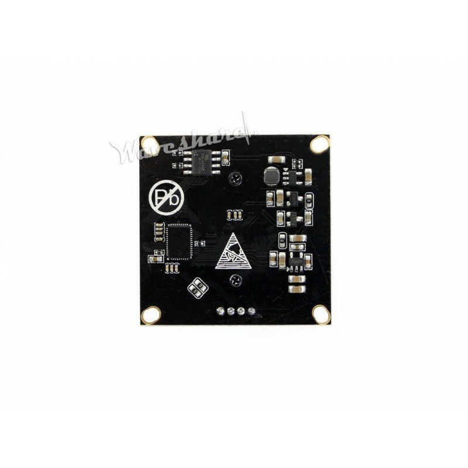
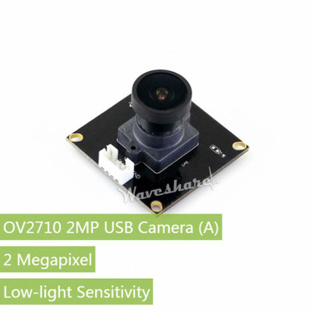

Home / Camera Modules / USB low-light camera module, 2MP
Camera Modules · USB visual
USB low-light camera module, 2MP
$89 ships from us after payment
- Named 2 MP USB UVC board — not a generic webcam
- Low-light site picture. Not thermal. No cell
- Plugs into a Pi or a laptop as a standard USB camera
Sold by Dark Sky Systems LLC. Card via Stripe.